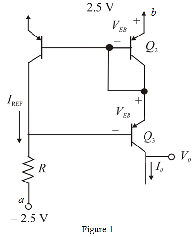

Consider the expression for current source.
Determine the value of  .
.
Apply Kirchhoff’s voltage law from node a to node b.
Consider the circuit diagram shown in Figure 1.

Consider the expression for current source.
Determine the value of .
Apply Kirchhoff’s voltage law from node a to node b.
When  is saturated is obtained.
is saturated is obtained.
Calculate the value of .
Therefore, the highest possible voltage at the output terminal is .